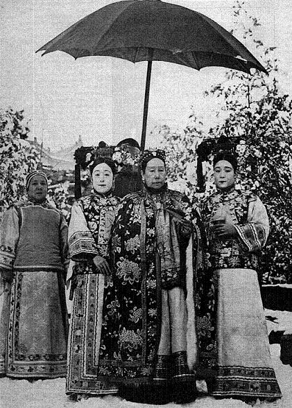

Chương 1
Các hoàng đế Trung Hoa thường sống trong Cấm Thành tại Bắc Kinh, và rất ít khi đi ra ngoài. Đây là một nơi được canh gác vô cùng nghiêm ngặt và là một cấm địa đối với đại đa số người Trung Hoa. Chính tại Cấm Thành, trong Đại Nội và Điện Thái Hoà, các hoàng đế Trung Hoa có quyền lực tuyệt đối đã cai trị trên một phần tư nhân loại. Vua Càn Long nhà Đại Thanh đã có lần nói Cấm Thành là một cái trục, một trung tâm mà toàn thể thế giới phải quay chung quanh.

Nhưng không phải hoàng đế nào cũng hùng mạnh, ngồi trong Cấm Thành ra mệnh lệnh và hàng trăm triệu người của đế quốc Trung Hoa phải tuân theo. Đã có những hoàng đế bất lực, quyền lực bị giới hạn bên trong khu Cấm Thành. Đó là trường hợp của vua Phổ Nghi, vị Hoàng Đế cuối cùng của nhà Mãn Thanh, và cũng là ông vua cuối cùng của Trung Hoa. Phổ Nghi lên ngôi chưa được bao lâu thì xảy ra cuộc cách mạng Tân Hợi của Tôn Văn. Nhà vua phải thoái vị và sống như bị giam lỏng bên trong Cấm Thành. Khi cuộc Trung Nhật chiến tranh xảy ra, Phổ Nghi được người Nhật đưa lên làm Hoàng Đế bù nhìn tại Mãn Châu. Như vậy Phổ Nghi được làm Hoàng Đế hai lần. Khi Nhật bại trận, Phổ Nghi bị quân Nga bắt, rồi giao cho tướng Mỹ McArthur. Cuối cùng Phổ Nghi trở thành một tù nhân trong tay Mao Trạnh Đông. Phổ Nghi phải làm công việc của một người làm vườn, chăm sóc cây cảnh ngay trong Cấm Thành.

Cuộc đời Phổ Nghi thực là gian nan từ lúc ba tuổi, khi được Thái Hậu Từ Hi đặt lên ngai vàng. Hai lần làm Hoàng Đế, hai lần trở thành tù nhân của Cấm Thành. Cuộc đời của Phổ Nghi là sản phẩm của Từ Hi, một người đàn bà khác thường, một người đàn bà xinh đẹp nhưng quỷ quyệt tàn ác, thông minh cương quyết, nhưng ít học và mê tín, và đặc biệt có tham vọng vô biên, muốn cai trị Trung Hoa mãi mãi. Từ Hi đã thực sự nắm vận mệnh mấy trăm triệu người Trung Hoa trong suốt 45 năm.
TRUNG HOA VÀO THẾ KỶ THỨ 19
Người Trung Hoa vốn trọng nam khinh nữ nên chỉ hoàng tử mới được lên ngôi vua và không có nữ hoàng như nhiều nước Tây phương. Một trong những nhiệm vụ của nhà vua là phải có hoàng tử để nối tiếp ngai vàng. Hoàng tử lên ngôi không nhất thiết phải là con của hoàng hậu, mà có thể là con của bất cứ một thứ phi nào. Nhà Đại Thanh đến đời các vua Đạo Quang, Hàm Phong vào khoảng giữa thế kỷ 19 đã có dấu hiệu suy đồi, vì cả hai ông vua này chỉ ham mê cung tần mỹ nữ, phung phí sức khoẻ vào tửu sắc và bỏ bê công việc triều chính. Quyền hành của thiên tử thường lọt vào tay các Thái Hậu. Chờ đợi mãi vua Hàm Phong vẫn chưa có con trai, nên bà Thái Hậu ra lệnh tuyển thêm mười bảy thiếu nữ Mãn Châu trẻ đẹp, nhu mì đạo hạnh, và khoẻ mạnh vào cung, với hy vọng các thiếu nữ này sẽ giúp vua Hàm Phong sớm có hoàng tử.
Các thiếu nữ này vào cung được khám xét cặn kẽ về các phương diện giáo dục, tư cách, dáng dấp, sắc đẹp, và khả năng sinh đẻ, và còn phải trải qua một cuộc thí nghiệm xem có còn là trinh nữ hay không. Tên của những người con gái được tuyển chọn vào cung được khắc vào một tấm thẻ bằng ngọc, và tất cả được đặt úp xấp trên một chiếc bàn trong phòng ngủ của nhà vua.
Buổi tối trước khi đi nghỉ, nhà vua thường lật một hoặc hai tấm thẻ lên và một tên thái giám có nhiệm vụ đi tới cung của người cung phi có tên trên tấm thể lật ngược để báo hỷ. Lúc đó người cung phi phải cởi hết quần áo ra, tắm rửa cho sạch sẽ thơm tho và được khám xét thân thể, trước khi người thái giám quấn một tấm khăn lớn trùm lên người cung phi, và cõng tới phòng ngủ của nhà vua. Người cung phi trần truồng được đặt ngồi dưới chân giường của nhà vua. Sáng hôm sau, tên thám giám trở lại phòng ngủ của vua, ghi tên người cung phi và giờ nhà vua hành lạc với người cung phi. Sau đó tên thái giám lại quàng một tấm khăn trùm lên người cung phi, và đưa nàng trở lại cung riêng.
Trước kia, khi người cung phi được nhà vua vời không phải trần truồng như vậy. Người cung phi phải trần truồng khi vào hầu vua bắt đầu từ thời nhà Minh. Nguyên nhân là vì có một cung phi được dẫn vào hầu vua, đã bí mật dắt theo trong người một sợi giây lụa màu vàng. Đêm đó sau khi ái ân, người cung phi dùng sợi giây màu vàng xiết cổ nhà vua, có lẽ để trả một mối thù nào đó.
Trong số mười bảy người con gái tiến cung cho vua Hàm Phong thì có một người thuộc bộ tộc Yehe Nara. Đó là Xuân Lan, một người con gái rất xinh đẹp mới mười sáu tuổi. Gia đình Xuân Lan đang hồi sa sút nghèo khó. Việc tiến cung thực là một cơ hội giải thoát cho nàng khỏi cảnh nghèo nàn tăm tối. Thoạt đầu Xuân Lan chỉ được phong làm một thứ phi. Trước khi tiến cung, Xuân Lan đã yêu một người anh họ rất đẹp trai tên là Vinh Lộc. Lúc đó Vinh Lộc làm chức Chưởng vệ trong đám ngự lâm quân bảo vệ Cấm Thành. Xuân Lan vẫn ao ước được kết duyên với Vinh Lộc, nhưng lệnh tiến cung đã xé nát những ước mơ tuổi trẻ của nàng.
Khi vào cung Xuân Lan càng thương nhớ Vinh Lộc, một phần là vì vua Hàm phong là một người xấu xí yếu đuối. Nhưng Xuân Lan cũng cảm thấy hãnh diện khi được tuyển chọn và nàng quyết tâm phải lấy được lòng sủng ái của nhà vua. Nàng rất thông minh và tìm cách thu phục các thái giám có quyền lực trong cung như Ân Đức Hải và Lý Liên Anh. Chính các tên thái giám này đã nhắc nhở tên Xuân Lan cho vua Hàm Phong. Khi được vua Hàm Phong vời, nàng đã trổ hết tài khéo trong nghệ thuật chăn gối để vua Hàm Phong say mê sủng ái riêng nàng. Cuối cùng Xuân Lan sinh hạ được một hoàng tử. Người ta đồn đứa con trai đó là con của Vinh Lộc, chứ không phải của vua Hàm Phong bệnh hoạn ốm yếu.
Sau khi sinh được hoàng tử, Xuân Lan được phong làm hoàng hậu, lúc đó nhà vua đã có hoàng hậu rồi, đó là Hoàng Hậu Từ An. Xuân Lan được ban tước hiệu Từ Hi và ở Tây Cung, vì thế sau này người ta còn gọi bà là Tây Thái Hậu. Từ Hi được nhà vua rất tin cẩn. Nhà vua thường hỏi ý kiến Từ Hi trước những vấn đề quốc sự khó khăn và lâu dần vua Hàm Phong trở nên nể sợ nàng. Nhà vua cũng nhận thấy Từ Hi quá khôn ngoan, quá tham vọng và rất hống hách đàn áp người khác. Rồi nhà vua chợt nhớ lại một lời sấm tiên tri nhà Mãn Thanh đã có từ lúc mới dựng nghiệp, nhưng lâu dần không mấy ai nhớ nữa. Lời sấm ấy là: một người đàn bà thuộc bộ tộc Yehe Nara sẽ tiếm quyền của Hoàng Để và sẽ làm sụp đổ ngai vàng nhà Mãn Thanh.
Từ Hi quả thực là người con gái đầu tiên của bộ tộc Yehe Nara được tuyển vào cung, và đã tạo được cơ hội để một ngày sẽ kiểm soát toàn thể đế quốc Trung Hoa trong chức vụ thái hậu. Sau cả một tuổi trẻ mài miệt truy hoan với hàng trăm mỹ nữ trong cung cấm, vua Hàm Phong kiệt lực và chết lúc mới 34 tuổi.
Từ Hi đã quen với việc triều chính. Bà đã từng ngồi sau một bức mành trúc phía sau nhà vua.Tuy nhiên nếu không có các thái giám thân tín thì bà đã mất hết cả quyền lực lúc vua Hàm Phong băng hà. Trước khi chết, vua Hàm Phong đã chỉ định tám vị nhiếp chính vương để giúp ấu chúa. Hội đồng nhiếp chính do thân vương Túc Thuận lãnh đạo. Hội đồng nhiếp chính này có quyền hành xử uy quyền nhà vua cho tới lúc ấu chúa trưởng thành. Không những thế, vua Hàm Phong còn bí mật ra một đạo dụ cho phép hội đồng nhiếp chính được quyền loại trừ Từ Hi, nếu Từ Hi can gián vào quốc sự. Trong suốt cuộc đời làm vua, đây là hành động khôn ngoan sáng suốt duy nhất của vua Hàm Phong. Nhưng ý nguyện của vua Hàm Phong đã không thể thực hiện được.
Các thái giám tâm phúc đã biết được đạo dụ bí mật của nhà vua, và thông báo cho Từ Hi. Từ Hi tìm cách hủy diệt đạo dụ đó. Ngay trong lúc cử hành quốc táng cho Hàm Phong, đã có một cuộc tranh dành quyền lực gay go giữa Từ Hi và tám nhiếp chính vương. Từ Hi có được sự trợ giúp của Vinh Lộc và các cấm binh nên đã loại được tất cả các đối thủ chính trị, và ra một đạo dụ bắt giữ và chém đầu tất cả các nhiếp chính vương. Kể từ đấy quyền lực của Từ Hi ngày một thêm vững mạnh. Dù bên trong hay bên ngoài Cấm Thành, mệnh lệnh của Từ Hi đều được tất cả kính sợ và tuân hành. Người đàn bà ít học nhưng độc đoán, xảo trá, tàn nhẫn, mê tín dị đoan và tham lam đó đã làm cả một đế quốc run rợ.
Triều đại Từ Hi là một thời kỳ tủi nhục nhất trong lịch sử Trung Hoa, vì bên trong phải đương đầu với sự chống đối của người Trung Hoa, và bên ngoài thì bị các cường quốc tây phương hùng mạnh tấn công chiếm đất. Với tư cách Thái Hậu, Từ Hi đã thao túng quyền lực của của ba hoàng đế cuối cùng nhà Mãn Thanh: con trai của chính bà là vua Đồng Trị, một người cháu gọi bà bằng dì là vua Quang Tự, và một người cháu họ gọi bằng bà là vua Phổ Nghi.
Tất cả ba hoàng đế này lên ngôi đều còn rất nhỏ, nên Từ Hi được nắm quyền nhiếp chính, và do đó Từ Hi có quyền hành tuyệt đối. Những thành quả của Từ Hi thực là phi thường, đặc biệt là bà đã có thể ngự trị cả một thế giới Trung Hoa trọng nam khinh nữ. Theo một nhà học giả Trung Hoa thì đàn bà không thể cai trị Trung Hoa được, cũng giống như gà mái không thể gáy sáng như gà trống. Thế mà Trung Hoa đã tùng chứng kiến các vị thái hậu hùng mạnh nhất trong lịch sử nhân loại là Võ Tắc Thiên và Từ Hi Thái Hậu. Từ Hi Thái Hậu đã giải thích rất nhiều luật lệ của nhà Mãn Thanh phù hợp với mục đích của bà, nhưng bà vẫn chưa dám thay đổi luật lệ cho phép đàn bà trở thành Hoàng Đế.
Từ Hi Thái Hậu đã bước lên tột đỉnh của quyền hành, và bên trong Cấm Thành hệ thống thái giám của nhà Mãn Thanh đã bắt đầu thay đổi giống như nhà Minh ngày trước. Chính nhờ người tình Vinh Lộc và bọn thái giám mà Từ Hi đã đoạt được quyền Thiên Tử, nên bà đã ban ân huệ rất rộng rãi cho giới thái giám. Khi con trai lên ngôi, Từ Hi phong cho Vinh Lộc làm phó vương và nắm quyền chỉ huy đạo quân miền bắc. Vinh Lộc suốt đời gần gủi Từ Hi. Để che mắt thế gian, Từ Hi cưới vợ cho Vinh Lộc, nhưng những thị phi trong triều vẫn không ngớt.
Các thái giám được giữ những chức vụ quan trọng đã làm hồi sinh sự tham nhũng trong cung cấm. Chính Từ Hi đã hoang phí ngân khố để mua sắm vàng bạc nữ trang, mở yến tiệc và xây lâu đài mới. Những món tiền lớn dùng để canh tân quân đội, đúc súng và chế tạo chiến hạm, bị chuyển sang xây Cung Điện Mùa Hạ một cách hết sức xa phí và nguy nga. Sự mục nát của xã hội Trung Hoa đã đưa tới những cuộc nổi loạn bên trong và những áp lực của ngoại bang bên ngoài. Trước hết là loạn Thái Bình Thiên Quốc của Hồng Tú Toàn, quấy phá miền nam gây chết chóc cho hàng triệu người. Sau đó là là loạn Quyền Phỉ chủ trương đuổi người ngoại quốc ra ngoài biển, và đưa Trung Hoa về với sự huy hoàng và sống biệt lập như trước kia.
Kẻ thù bên ngoài là các nước tây phương liên tiếp xâu xé chiếm đoạt lãnh thổ Trung Hoa, khíến Trung Hoa mất hết quyền tối thượng quốc gia. Cuối cùng cả từng vùng của Trung Hoa phải cắt nhường cho các nước Âu Châu. Nhưng mối nguy hiểm chính yếu của Trung Hoa là từ phía Nga Sô và Nhật Bản.
Khi nhà Thanh chinh phục Trung Hoa thì quân Thanh hùng mạnh đã đánh bại quân Nhật tại Cao Ly, đẩy người Nhật phải trở về các hải đảo, và đuổi người Nga phải rút về phía bên kia sông Hắc Long Giang. Đến thế kỷ 19, khi thấy Trung Hoa bị Anh, Pháp bắt nạt một cách nhục nhã dễ dàng, thì người Nhật tin rằng con rồng Trung Hoa bây giờ không thể phun ra lửa được nữa, và bắt đầu tính toán xâm lăng Trung Hoa.
Người Nga khởi đầu một cuộc Nam tiến từ Tây Bá Lợi Á, tiến tới đồng bằng Mãn Châu và chiếm các hải cảng có nước ấm tại biển Thái Bình Dương. Năm 1858, trong khi Từ Hi Thái Hậu củng cố được địa vị và quyền hành bên trong Cấm Thành, thì nhà Thanh phải nhượng bộ các yêu sách của Nga Sô, nhường cho Nga Sô tất cả đất đai ở phía bắc sông Hắc Long Giang. Nga Sô còn được quyền kiểm soát vùng Ussuri, một khu vực chiến lược giáp giới với Thái Bình Dương. Hai năm sau, người Nga Sô lại trở lại đòi thêm đất đai nữa và được quyền kiểm soát các vùng phía đông cũa sông Ussuri, kể cả hải cảng Vlapostok.
Thấy người Nga làm ăn được, Nhật Bản liền tiến vào Trung Hoa dành phần ăn. Nhật Bản là một nước Á châu thức thời, đi theo kỹ thuật tây phương và trở nên hùng mạnh hơn Trung Hoa. Năm 1895, Nhật Bản tuyên chiến với Trung Hoa và đánh bại quân đội yếu kém của nhà Thanh trên biển cả và đất liền. Kết quả là Trung Hoa phải nhường cho Nhật Bãn Đài Loan và Cao Ly. Trung Hoa chiếm được Đài Loan vào lúc cực thịnh của nhà Thanh. Bây giờ nhà Thanh bắt đầu suy đồi, không còn giữ được Đài Loan nữa.
Nhưng Cao Ly và Đài Loan vẫn chưa đủ thoả mãn con hổ Nhật Bản đang đói khát tham lam. Nơi Nhật Bản nhắm vào là Mãn Châu, một vùng đất rộng mênh mông rất giầu tài nguyên cho kỹ nghệ mà dân cư lại thưa thớt. Nhật Bản đòi có ảnh hưởng tại Mãn Châu. Nhưng lúc đó Nhật Bản cũng chỉ là một cường quốc hạng nhì, mới nổi. Nga Sô, Pháp và Đức liền can thiệp và bênh vực Trung Hoa khiến Nhật Bản phải rút lui. Thực ra các nước Âu Châu chẳng thương gì Trung Hoa. Họ đẩy Nhật Bản ra để chiếm phần cho họ. Cuộc đụng độ giữa Trung Hoa và Nhật Bản đã bộc lộ sự hèn kém của Trung Hoa.
Càng ngày các nước Âu Châu càng chú ý khai thác Trung Hoa. Vì công lao bênh vực Trung Hoa chống lại Nhật Bản, Pháp đòi Trung Hoa phải để mặc Pháp chiếm Việt Nam, và Pháp liên tiếp chiếm ba nước trong bán đảo Đông Dương. Anh Quốc cũng đòi chiếm Miến Điện vốn thuộc ảnh hưởng của Trung Hoa. Nga Sô đòi được quyền thiết lập đường hoả xa chạy dọc Mãn Châu, và được quyền sử dụng đất đai chạy dọc hai bên đường xe lửa. Nga Sô cũng được thuê cửa biển Lữ Thuận và địa điểm chiến lược Liêu Đông trong một thời hạn 25 năm. Nga Sô cũng xây thêm một đường xe lửa nối liền Lữ Thuận và Mãn Châu, cả hai đường xe lửa này nhập vào đường xe lửa xuyên Tây Bá Lợi Á. Lúc đó Nga Sô đang ở thế thượng phong. Mãn Châu được coi là một điểm chiến lược quan trọng có thể chế ngự cả Trung Hoa, Cao Ly và Mông Cổ.
Đức Quốc cũng bắt nạt triều đình Mãn Thanh và đòi chiếm hải cảng Thanh Đảo và 200 dặm vuông quanh Thanh Đảo. Đức cũng đòi được quyền khai thác mỏ tại khu nhượng địa. Anh Quốc thấy Đức làm ăn ngon lành nên cũng yêu sách nhà Thanh phải nhường cho Anh một vùng rộng 375 dặm vuông đối diện với Hồng Kông mà Anh Quốc đã chiếm được trong thập niên 1840. Pháp lập tức đòi 200 dặm vuông tại tỉnh Quảng Đông và bờ biển phía nam của Trung Hoa. Riêng Mỹ Quốc không có mặt trong cuộc xâu xé Trung Hoa một cách nhộn nhịp này.